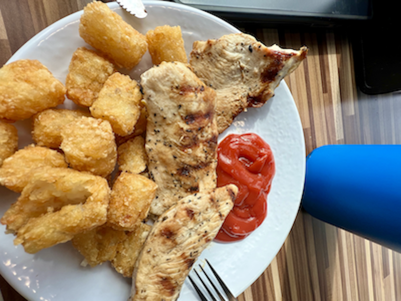

Photo Gallary
The Finest Cuisine of JMU

D- Hall
Plain grilled chicken and tator tots.
Bistro
Zoodles with grilled chicken.
D - Hall
Steak night with asparagus.

E - Hall
The coveted cheesesteak.
Derivative of extensive research and studies
By Dukes - For DukesSitting as truly the undisputed G.O.A.T. of JMU Dining, E - Hall has it all for simply a punch. From a classy aura to a ridiculous variety of ice cream flavors, E - Hall popped off. Located behind the Skyline dorms, it's subtle appearance is all to humble for the greatness inside
Notable Dishes
Drawbacks
Tucked between Carrier Library and The Union, Dukes Dining houses several big name restaurants such as Panda Express, Panera, Denny's, Oath Pizza, Blueridge Bowl, and Tacodillo. With so much to choose from, it's hard to miss with both punch and dining dollar options.
Notable Dishes
Drawbacks
Resting above the east campus commons, Festival features a food court with pasta, fast food, Chinese, and acai bowls. Every individual item can be bought for a punch.
Notable Dishes
Drawbacks
Placed in the center of campus for all to enjoy, D - Hall features a massive buffee with Chic - Fil A, Freshens, Java, and Market 64 beneath. The buffee boasts weekly rotations of different foods and the options below allow for both dining dollar and punch deals. Students can use excess punch at market 64 to buy small food items.
Notable Dishes
Drawbacks
Found on the second floor of the Student Success Center, Bistro 1908 has an impressive rep despite its small size. Comprised of an Italian and fast food station, both menus offer punch or dining dollar options.
Notable Dishes
Drawbacks
Plain grilled chicken and tator tots.
Zoodles with grilled chicken.
Steak night with asparagus.
The coveted cheesesteak.